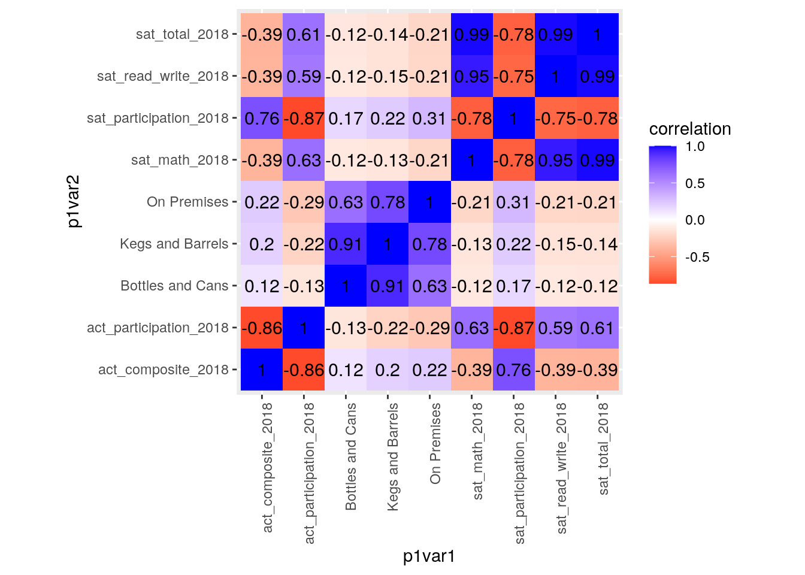
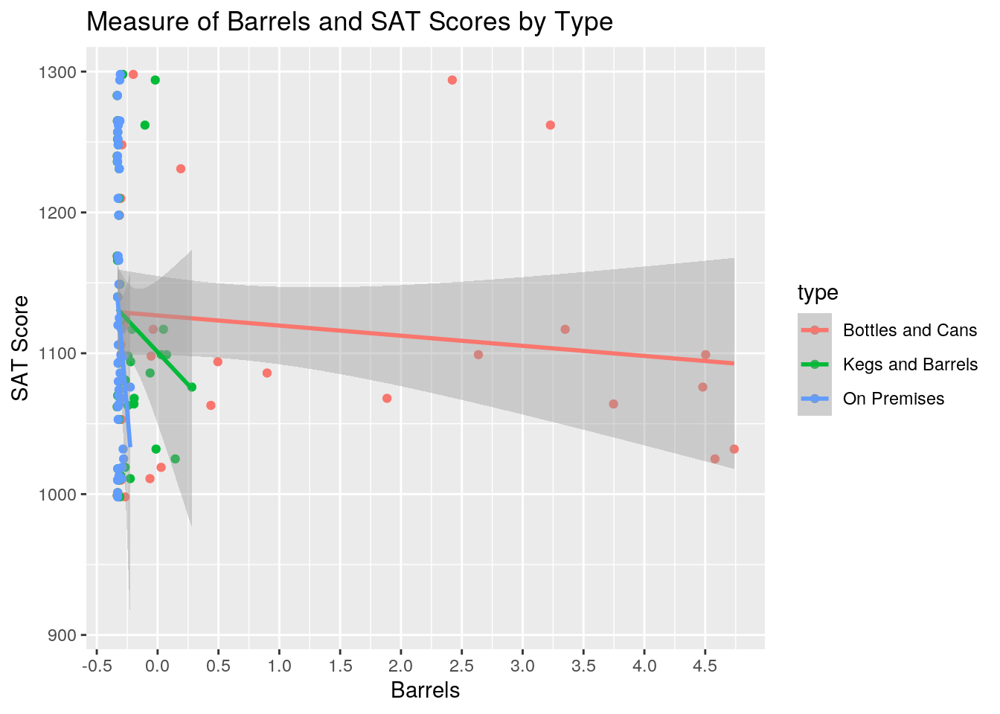
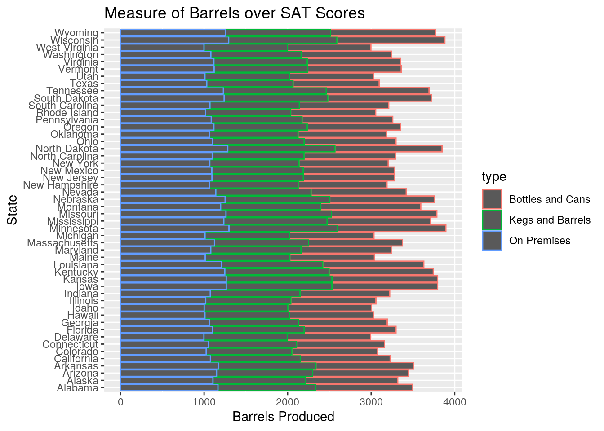
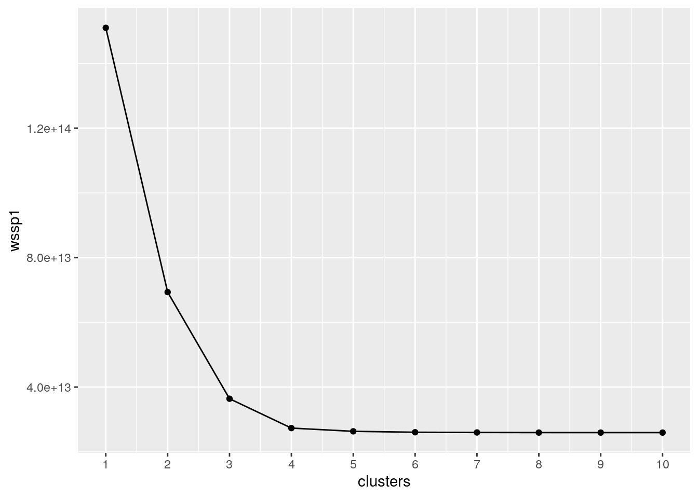
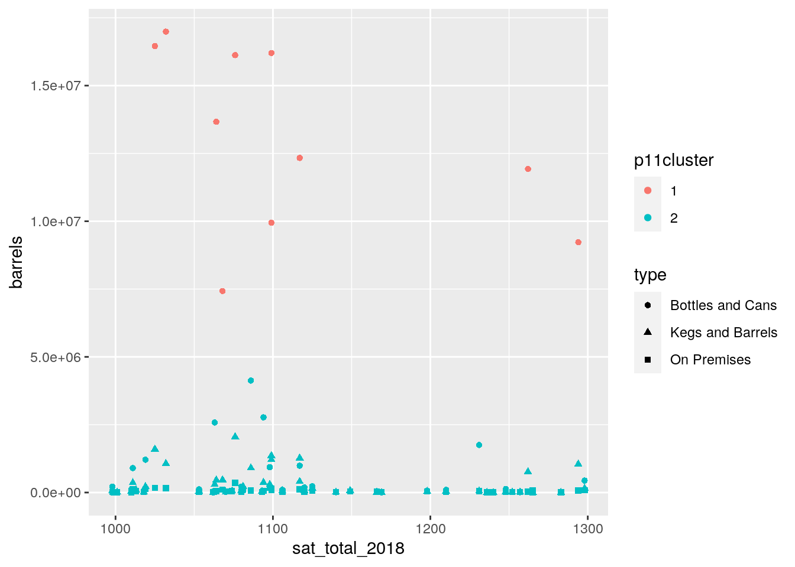
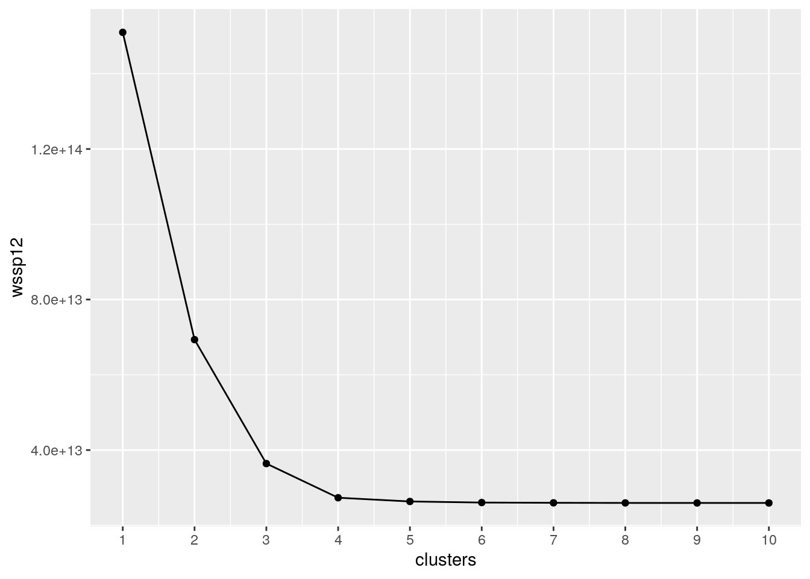
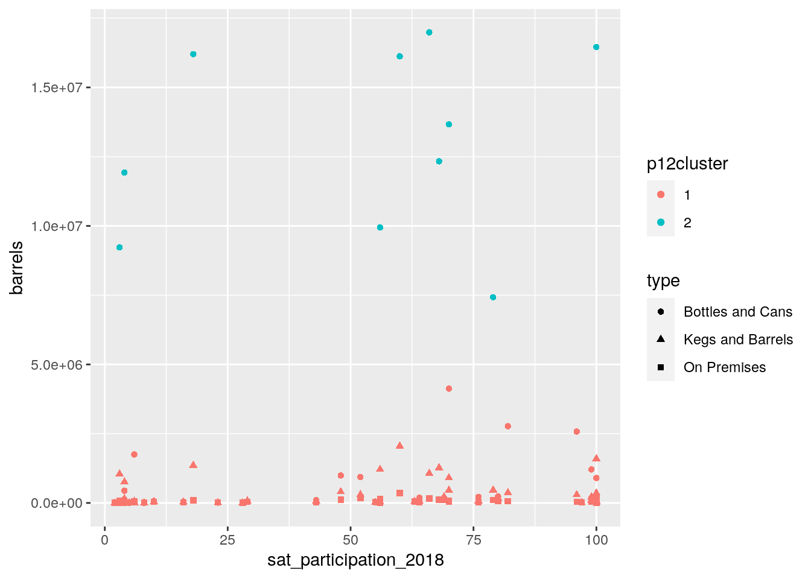
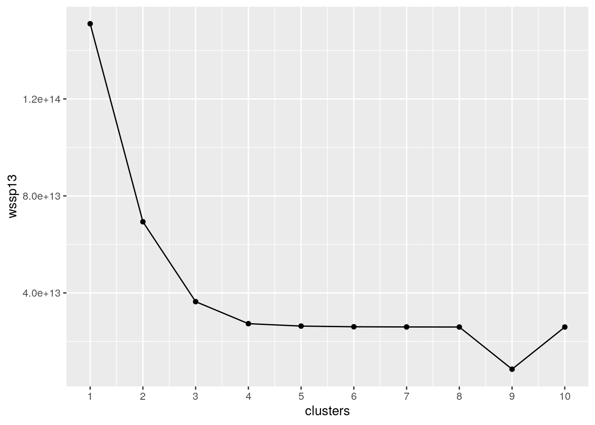

A knitted R Markdown document (ideally HTML) and the raw R Markdown file (as .Rmd) should both be submitted to Canvas by 11:59pm on 10/11/2020. These two documents will be graded jointly, so they must be consistent (i.e., don’t change the R Markdown file without also updating the knitted document).
The text of the document should provide a narrative structure around your code/output. All results presented must have corresponding code. Any answers/results/plots etc. given without the corresponding R code that generated the result will not be considered. Furthermore, all code contained in your final project document must work correctly (knit early, knit often)! Please do not include any extraneous code or code which produces error messages. (Code that produces warnings is acceptable, as long as you understand what the warnings mean!)
Find two (!) datasets with one variable in common (e.g., dates, times, states, counties, countries, sports players), both with at least 50 observations (i.e., rows) in each. Please think very carefully about whether it makes sense to combine your datasets! If you find one dataset with 50 patients and it has their age, and you find another dataset with 50 different patients that has their ages, it makes no sense to join them based on age (you would just be pairing up random people of the same age).
When combined, the resulting/final dataset must have at least 4 different variables (at least 3 numeric) in addition to the common variable (i.e., five variables total).
You can have as many variables as you would like! If you found two datasets that you like but they don't have enough variables, find a third dataset with the same common variable and join all three.
If the datasets are not tidy, you will need to reshape them so that every observation has its own row and every variable its own column. If the datasets are both already tidy, you will make them untidy with pivot_wider()/spread() and then tidy them again with pivot_longer/gather() to demonstrate your use of the functions. It's fine to wait until you have your descriptives to use these functions (e.g., you might want to pivot_wider() to rearrange the data to make your descriptive statistics easier to look at); it's fine long as you use them at least once!
Depending on your datasets, it might be a good idea to do this before joining. For example, if you have a dataset you like with multiple measurements per year, but you want to join by year, you could average over your numeric variables to get means/year, do counts for your categoricals to get a counts/year, etc.
If your data sets are already tidy, demonstrate the use of pivot_longer()/gather() and pivot_wider()/spread() on all or part of your data at some point in this document (e.g., after you have generated summary statistics in part 3, make a table of them wide instead of long).
Join your 2+ separate data sources into a single dataset based on a common ID variable! If you can't find a good pair datasets to join, you may split one main dataset into two different datasets with a common ID variable in each, and then join them back together based on that common ID, but this is obviously less than ideal.
Create summary statistics
Use all six core dplyr functions (filter, select, arrange, group_by, mutate, summarize) to manipulate and explore your dataset. For mutate, create a new variable that is a function of at least one other variable, preferably using a dplyr vector function (see dplyr cheatsheet). It's totally fine to use the _if, _at, _all versions of mutate/summarize instead (indeed, it is encouraged if you have lots of variables)
Create summary statistics (mean, sd, var, n, quantile, min, max, n_distinct, cor, etc) for each of your numeric variables both overall and after grouping by one of your categorical variables (either together or one-at-a-time; if you have two categorical variables, try to include at least one statistic based on a grouping of two categorical variables simultaneously). If you do not have any categorical variables, create one using mutate (e.g., with case_when or ifelse) to satisfy the group_by requirements above. Ideally, you will find a way to show these summary statistics in an easy-to-read table (e.g., by reshaping). (You might explore the kable package for making pretty tables!) If you have lots of numeric variables (e.g., 10+), or your categorical variables have too many categories, just pick a few (either numeric variables or categories of a categorical variable) and summarize based on those. It would be a good idea to show a correlation matrix for your numeric variables (you will need it to make one of your plots).
Make visualizations (three plots)
stat="summary"Perform k-means/PAM clustering or PCA on (at least) your numeric variables.
Include all steps as we discuss in class, including a visualization.
If you don't have at least 3 numeric variables, or you want to cluster based on categorical variables too, convert them to factors in R, generate Gower's dissimilarity matrix on the data, and do PAM clustering on the dissimilarities.
Show how you chose the final number of clusters/principal components
Interpret the final clusters/principal components
For every step, document what your code does (in words) and what you see in the data!
Prerequisite: Finding appropriate data from at least two sources per the instructions above: Failure to do this will result in a 0! You will submit a .Rmd file and a knitted document (pdf).
I have chosen data that gives average SAT and ACT scores for each state and the data that gives the number of breweries per state.I picked my data from github after I verified they both had numeric varibles and both had US states as a category. The 2018 SAT data has the state, ACT particpation, mean ACT composit scores, SAT participation, mean SAT math scores, mean SAT reading and writing scores, and the mean SAT total scores. The brewrie data consists of state, year, total barrels brewed, and type of production, which includes On Premises, Bottles and Cans, and Kegs and Barrels. This data intrests me because I want to see if there is a correlation between the amount of beer brewed and SAT scores. I expect that states with high production of beer to have high SAT scores since if there is more business done in that state, there may be more money put into SAT preperation for students.
tidyr functions pivot_longer/gather and/or pivot_wider/spread)library(tidyverse)
beer_states <- readr::read_csv("https://raw.githubusercontent.com/rfordatascience/tidytuesday/master/data/2020/2020-03-31/beer_states.csv")
glimpse(beer_states)## Rows: 1,872
## Columns: 4
## $ state <chr> "AK", "AK", "AK", "AK", "AK", "AK", "AK", "AK", "AK", "AK", "…
## $ year <dbl> 2008, 2009, 2010, 2011, 2012, 2013, 2014, 2015, 2016, 2017, 2…
## $ barrels <dbl> 2067.69, 2263.65, 1929.15, 2251.02, 2312.43, 2155.60, 2114.97…
## $ type <chr> "On Premises", "On Premises", "On Premises", "On Premises", "…SAT <- readr::read_csv("https://raw.githubusercontent.com/irinhwng/SAT-Participation-Rates/master/datasets/combined_2018.csv")
glimpse(SAT)## Rows: 51
## Columns: 7
## $ state_2018 <chr> "Alabama", "Alaska", "Arizona", "Arkansas", "C…
## $ act_participation_2018 <dbl> 100, 33, 66, 100, 27, 30, 26, 17, 32, 66, 53, …
## $ act_composite_2018 <dbl> 19.1, 20.8, 19.2, 19.4, 22.7, 23.9, 25.6, 23.8…
## $ sat_participation_2018 <dbl> 6, 43, 29, 5, 60, 100, 100, 100, 92, 56, 70, 5…
## $ sat_read_write_2018 <dbl> 595, 562, 577, 592, 540, 519, 535, 505, 497, 5…
## $ sat_math_2018 <dbl> 571, 544, 572, 576, 536, 506, 519, 492, 480, 5…
## $ sat_total_2018 <dbl> 1166, 1106, 1149, 1169, 1076, 1025, 1053, 998,…I opened the tidyverse package and called the data from github with the read_csv command and the data URL. After this I saved them as beer_states and SAT. I did not have to tidy the data since it is already tidy with distinct variables for each relevent row. I will tidy the data further by filtering for relevent data after I merge the tables to ensure I do not drop rows prematurely.
dplyr join functionP1names <- bind_cols(stabb = state.abb, stname = state.name)
p1fix <- full_join(SAT, P1names, by = c(state_2018 = "stname"))
p1dat <- left_join(p1fix, beer_states, by = c(stabb = "state"))
p1data <- p1dat %>% select(-stabb) %>% filter(year == 2018)
p1data %>% summarise_all(function(x) sum(is.na(x)))## # A tibble: 1 x 10
## state_2018 act_participati… act_composite_2… sat_participati… sat_read_write_…
## <int> <int> <int> <int> <int>
## 1 0 0 0 0 0
## # … with 5 more variables: sat_math_2018 <int>, sat_total_2018 <int>,
## # year <int>, barrels <int>, type <int>glimpse(p1data)## Rows: 150
## Columns: 10
## $ state_2018 <chr> "Alabama", "Alabama", "Alabama", "Alaska", "Al…
## $ act_participation_2018 <dbl> 100, 100, 100, 33, 33, 33, 66, 66, 66, 100, 10…
## $ act_composite_2018 <dbl> 19.1, 19.1, 19.1, 20.8, 20.8, 20.8, 19.2, 19.2…
## $ sat_participation_2018 <dbl> 6, 6, 6, 43, 43, 43, 29, 29, 29, 5, 5, 5, 60, …
## $ sat_read_write_2018 <dbl> 595, 595, 595, 562, 562, 562, 577, 577, 577, 5…
## $ sat_math_2018 <dbl> 571, 571, 571, 544, 544, 544, 572, 572, 572, 5…
## $ sat_total_2018 <dbl> 1166, 1166, 1166, 1106, 1106, 1106, 1149, 1149…
## $ year <dbl> 2018, 2018, 2018, 2018, 2018, 2018, 2018, 2018…
## $ barrels <dbl> 41718.66, 14241.33, 9873.67, 30620.23, 100038.…
## $ type <chr> "On Premises", "Bottles and Cans", "Kegs and B…Since SAT has the states spelled out and beer_states has them abbreviated, I used the built in state.name and state.abb data sets to create a common variable between them with bind_cols.After this I did a full join with SAT data with 51 rows and the state data with 50 rows, then I did the full join to add the beer_states data with 1872 rows into the new SAT dataset with 1872 rows total. After this I created a condensed version with select() to remove the abbreviations completely from the dataset and then I filtered for the year 2018 to match the SAT data. After this six cases were dropped since I filtered out Washington DC since I am only looking for states, and the total beer brewed since it accounts for DC's production. In the end the data contains 150 rows where each state has three entries to account for type of production. No NAs were automatically dropped since there were values for each state after I filtered for relevent data.
dplyr functions in the service of generating summary statistics (18 pts)
cor() on your numeric variableslibrary(DT)
p1data %>% group_by(state_2018) %>% summarize(Avg_Brls = mean(barrels),
Std_Dev_Brls = sd(barrels), Med_Brls = median(barrels), Qnt_Brls = quantile(barrels),
Total_Brls = sum(barrels)) %>% arrange(desc(Qnt_Brls)) %>%
datatablep1data %>% summarize(Avg_Score = mean(sat_total_2018), Med_Score = median(sat_total_2018),
Std_Dev_Score = sd(sat_total_2018), Min_Score = min(sat_total_2018),
Max_Score = max(sat_total_2018)) %>% datatablep1data %>% group_by(state_2018) %>% select(state_2018, barrels,
type, sat_total_2018) %>% summarise(Minimum_Brls = min(barrels),
Max_Brls = max(barrels), SATscore = max(sat_total_2018)) %>%
arrange(desc(SATscore)) %>% datatablep1data %>% filter(type == "On Premises") %>% mutate(reading_prop = sat_read_write_2018/sat_total_2018,
math_prop = sat_math_2018/sat_total_2018) %>% arrange(desc(barrels)) %>%
datatablep1data %>% filter(type == "Bottles and Cans") %>% mutate(reading_prop = sat_read_write_2018/sat_total_2018,
math_prop = sat_math_2018/sat_total_2018) %>% arrange(desc(barrels)) %>%
datatablep1data %>% filter(type == "Kegs and Barrels") %>% mutate(reading_prop = sat_read_write_2018/sat_total_2018,
math_prop = sat_math_2018/sat_total_2018) %>% arrange(desc(barrels)) %>%
datatablep1datatb <- p1data %>% group_by(state_2018) %>% mutate(total_barrels = sum(barrels))
p1datawd <- p1data %>% pivot_wider(names_from = type, values_from = barrels)
p1datawd %>% glimpse## Rows: 50
## Columns: 11
## $ state_2018 <chr> "Alabama", "Alaska", "Arizona", "Arkansas", "C…
## $ act_participation_2018 <dbl> 100, 33, 66, 100, 27, 30, 26, 17, 66, 53, 89, …
## $ act_composite_2018 <dbl> 19.1, 20.8, 19.2, 19.4, 22.7, 23.9, 25.6, 23.8…
## $ sat_participation_2018 <dbl> 6, 43, 29, 5, 60, 100, 100, 100, 56, 70, 56, 1…
## $ sat_read_write_2018 <dbl> 595, 562, 577, 592, 540, 519, 535, 505, 550, 5…
## $ sat_math_2018 <dbl> 571, 544, 572, 576, 536, 506, 519, 492, 549, 5…
## $ sat_total_2018 <dbl> 1166, 1106, 1149, 1169, 1076, 1025, 1053, 998,…
## $ year <dbl> 2018, 2018, 2018, 2018, 2018, 2018, 2018, 2018…
## $ `On Premises` <dbl> 41718.66, 30620.23, 47009.71, 25150.46, 359636…
## $ `Bottles and Cans` <dbl> 14241.33, 100038.94, 56861.38, 1668.50, 161227…
## $ `Kegs and Barrels` <dbl> 9873.67, 62922.15, 71892.05, 1623.57, 2054263.…p1datawd %>% select(-year) %>% select_if(is.numeric) %>% scale %>%
cor## act_participation_2018 act_composite_2018
## act_participation_2018 1.0000000 -0.8613623
## act_composite_2018 -0.8613623 1.0000000
## sat_participation_2018 -0.8662045 0.7553042
## sat_read_write_2018 0.5852682 -0.3882969
## sat_math_2018 0.6271002 -0.3915104
## sat_total_2018 0.6134660 -0.3948742
## On Premises -0.2863932 0.2201666
## Bottles and Cans -0.1333546 0.1177018
## Kegs and Barrels -0.2245634 0.1974418
## sat_participation_2018 sat_read_write_2018 sat_math_2018
## act_participation_2018 -0.8662045 0.5852682 0.6271002
## act_composite_2018 0.7553042 -0.3882969 -0.3915104
## sat_participation_2018 1.0000000 -0.7535198 -0.7836654
## sat_read_write_2018 -0.7535198 1.0000000 0.9528826
## sat_math_2018 -0.7836654 0.9528826 1.0000000
## sat_total_2018 -0.7780447 0.9881856 0.9880956
## On Premises 0.3082923 -0.2067518 -0.2077875
## Bottles and Cans 0.1652704 -0.1224245 -0.1207757
## Kegs and Barrels 0.2218983 -0.1507044 -0.1347878
## sat_total_2018 On Premises Bottles and Cans
## act_participation_2018 0.6134660 -0.2863932 -0.1333546
## act_composite_2018 -0.3948742 0.2201666 0.1177018
## sat_participation_2018 -0.7780447 0.3082923 0.1652704
## sat_read_write_2018 0.9881856 -0.2067518 -0.1224245
## sat_math_2018 0.9880956 -0.2077875 -0.1207757
## sat_total_2018 1.0000000 -0.2096846 -0.1236286
## On Premises -0.2096846 1.0000000 0.6286540
## Bottles and Cans -0.1236286 0.6286540 1.0000000
## Kegs and Barrels -0.1448769 0.7835465 0.9110964
## Kegs and Barrels
## act_participation_2018 -0.2245634
## act_composite_2018 0.1974418
## sat_participation_2018 0.2218983
## sat_read_write_2018 -0.1507044
## sat_math_2018 -0.1347878
## sat_total_2018 -0.1448769
## On Premises 0.7835465
## Bottles and Cans 0.9110964
## Kegs and Barrels 1.0000000p1datawd %>% pivot_longer(9:11, names_to = "Production", values_to = "Barrels Produced",
values_drop_na = T) %>% glimpse## Rows: 150
## Columns: 10
## $ state_2018 <chr> "Alabama", "Alabama", "Alabama", "Alaska", "Al…
## $ act_participation_2018 <dbl> 100, 100, 100, 33, 33, 33, 66, 66, 66, 100, 10…
## $ act_composite_2018 <dbl> 19.1, 19.1, 19.1, 20.8, 20.8, 20.8, 19.2, 19.2…
## $ sat_participation_2018 <dbl> 6, 6, 6, 43, 43, 43, 29, 29, 29, 5, 5, 5, 60, …
## $ sat_read_write_2018 <dbl> 595, 595, 595, 562, 562, 562, 577, 577, 577, 5…
## $ sat_math_2018 <dbl> 571, 571, 571, 544, 544, 544, 572, 572, 572, 5…
## $ sat_total_2018 <dbl> 1166, 1166, 1166, 1106, 1106, 1106, 1149, 1149…
## $ year <dbl> 2018, 2018, 2018, 2018, 2018, 2018, 2018, 2018…
## $ Production <chr> "On Premises", "Bottles and Cans", "Kegs and B…
## $ `Barrels Produced` <dbl> 41718.66, 14241.33, 9873.67, 30620.23, 100038.…In the barrels data the mean, standard deviation, median, quantile and sum of all barrels for the three types of production methods were measured for each state and arranged by descending quantile.By looking at the top six states California was the lead producer while still not being in the highest quantile with Texas, Colorado, and Ohio above it even with less barrels produced and lower values for mean, median, and total sum.Next statistics were take for SAT scores with the mean at 1122.88, median at 1098.5, standard deviation of 92.22, minimum of 998 and maximum of 1298 points. When arranged by descending SAT scores and bringing up the maxium and minimum barrels produced from each type of production, Minnesota scored the highest in SAT score with a low maxium barrels produced. There is high variance in the number of barrels produced in the top six states compared to the ranking in SAT scores.
In the next three tables the proportion of writing and read scores to the total and the proportion of math scores were evalutated and arranged in descending order of barrels according to the type of production used. There proportions were roughly the same for each state and did not seem to correspond to the type of production, On Premises, Kegs and Barrels, or Bottles and Cans. When evaluating the correlations between each variable, Bottles and Cans seemed to have the least effect on SAT scores and On Premsises had the highest correlation on SAT participation with a value of 0.308. and a correlation of -.209 for total SAT score. There seems to be little correlation between barrel production and SAT performance.
Create a correlation heatmap of your numeric variables
Create two effective, polished plots with ggplot
# just fill it out
p1df <- p1datawd %>% select(-year) %>% select_if(is.numeric) %>%
na.omit
cormatp1 <- p1df %>% cor
p1cor <- cormatp1 %>% as.data.frame %>% rownames_to_column("p1var1") %>%
pivot_longer(-1, names_to = "p1var2", values_to = "correlation")
p1cor %>% ggplot(aes(p1var1, p1var2, fill = correlation)) + geom_tile() +
scale_fill_gradient2(low = "red", mid = "white", high = "blue") +
geom_text(aes(label = round(correlation, 2)), color = "black",
size = 4) + theme(axis.text.x = element_text(angle = 90,
hjust = 1)) + coord_fixed()
p1data %>% mutate(scbar = scale(barrels)) %>% ggplot(aes(x = scbar,
y = sat_total_2018, color = type)) + geom_point(stat = "summary") +
ylab("SAT Score") + xlab("Barrels") + ggtitle("Measure of Barrels and SAT Scores by Type") +
scale_x_continuous(breaks = seq(-1, 5, 0.5)) + geom_smooth(method = "lm")
p1data %>% ggplot(aes(x = state_2018, y = sat_total_2018, color = type)) +
geom_bar(stat = "summary") + ylab("Barrels Produced") + xlab("State") +
ggtitle("Measure of Barrels over SAT Scores") + coord_flip() In the correlation heat map when comparing the type of prodcution with SAT total scores and SAT participation, on premises production has the strongest correlation. The positve correlation is weak with 0.21 for score and .31 for particpation, but is greater than kegs and barrels at .14 and .22 and greater than bottles and cans at .12 for both variables.
After scaling for barrels I ploted SAT scores over produced barrels for each state by type to visualize any correlations. With this plot there seems to be a weak negative correlation between bottle and can production with SAT scores which does not match the correlation heat map above.On premise production has no correlation with all points bunched together and kegs and barrels has no correlation as well though it is a little more spread out than barrels produced on premises.
With the same scaled data from the scatter plot I created a bar graph of barrels produced for each state by type to visualize total production for each state. Production of barrels that are bottled and canned vastly outnumber both on premise production and keg and barrel production. This may explain why there seems to be more correlation with bottle and can production compared to the other types on the scatter plot above. Though this does not explain why bottles and cans have less correlation according to the heatmat where the other types have slightly stronger correlations. #### 5. Dimensionality Reduction (20 pts)
Either k-means/PAM clustering or PCA (inclusive "or") should be performed on at least three numeric variables in your dataset
library(cluster)
# Scores and Barrels
p1clust_dat1 <- p1data %>% dplyr::select(sat_total_2018, barrels,
type)
wssp1 <- vector()
for (i in 1:10) {
kmsp1 <- p1clust_dat1 %>% dplyr::select(sat_total_2018, barrels) %>%
kmeans(., i + 1)
wssp1[i] <- kmsp1$tot.withinss
}
ggplot() + geom_point(aes(x = 1:10, y = wssp1)) + geom_path(aes(x = 1:10,
y = wssp1)) + xlab("clusters") + scale_x_continuous(breaks = 1:10)
kmeansp11 <- p1clust_dat1 %>% select(-type) %>% kmeans(2)
kmeansclustp11 <- p1clust_dat1 %>% mutate(p11cluster = as.factor(kmeansp11$cluster))
kmeansclustp11 %>% ggplot(aes(x = sat_total_2018, y = barrels,
shape = type, color = p11cluster)) + geom_point() + scale_fill_brewer(palette = "Spectral")
# Participation and Barrels
p1clust_dat2 <- p1data %>% dplyr::select(sat_participation_2018,
barrels, type)
wssp12 <- vector()
for (i in 1:10) {
kmsp12 <- p1clust_dat2 %>% dplyr::select(sat_participation_2018,
barrels) %>% kmeans(., i + 1)
wssp12[i] <- kmsp12$tot.withinss
}
ggplot() + geom_point(aes(x = 1:10, y = wssp12)) + geom_path(aes(x = 1:10,
y = wssp12)) + xlab("clusters") + scale_x_continuous(breaks = 1:10)
kmeansp12 <- p1clust_dat2 %>% select(-type) %>% kmeans(2)
kmeansclustp12 <- p1clust_dat2 %>% mutate(p12cluster = as.factor(kmeansp12$cluster))
kmeansclustp12 %>% ggplot(aes(sat_participation_2018, barrels,
shape = type, color = p12cluster)) + geom_point() + scale_fill_brewer(palette = "Spectral")
# Scores, Participation, and Barrels
p1clust_dat3 <- p1data %>% dplyr::select(sat_total_2018, barrels,
sat_participation_2018, type)
wssp13 <- vector()
for (i in 1:10) {
kmsp13 <- p1clust_dat3 %>% dplyr::select(sat_total_2018,
barrels, sat_participation_2018) %>% kmeans(., i + 1)
wssp13[i] <- kmsp13$tot.withinss
}
ggplot() + geom_point(aes(x = 1:10, y = wssp13)) + geom_path(aes(x = 1:10,
y = wssp13)) + xlab("clusters") + scale_x_continuous(breaks = 1:10)
kmeansp13 <- p1clust_dat3 %>% select(-type) %>% kmeans(2)
kmeansclustp13 <- p1clust_dat3 %>% mutate(p13cluster = as.factor(kmeansp13$cluster))
library(plotly)
kmeansclustp13 %>% plot_ly(x = ~sat_total_2018, y = ~sat_participation_2018,
z = ~barrels, color = ~kmeansp13$cluster, type = "scatter3d",
mode = "markers", symbol = ~type, symbols = c("circle", "triangle",
"o")) %>% layout(autosize = T)Both graphs had two clusters where a majority of the observations were in the lower cluster and the higher cluster consisted of bottles and cans type of production and were distinctly seperate from the first cluster. Both graphs for participation and scores are consistant with each other in their cluster placements. It appears that the second cluster consists of the outliers in high barrel production. By observing the types prodcution for cluster 1, on premises was the lowest with kegs slightly higher. A few bottles and cans were in cluster 1 but a majority of them seem to define cluster 2. The graphs differ where for SAT scores obsevations remained on the lower side under 1150 and in participation the observations leaned on the higher side over 50. The highest means of production in cluster 2 followed this trend but there does not seem to create a defined third cluster. I created the seperate graphs and the 3D graph for different ways to visualize the same data where for the three numeric variables I used SAT scores, participation, barrels produced, and type of production with the same process as the first two kmeans calculations and used the plotly package to create the 3D graph. The 3D graph was used to show all three numeric varialbles at the same time.
**
...